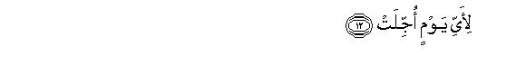
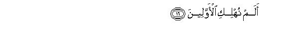
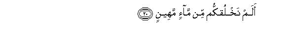
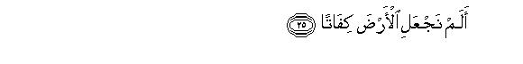
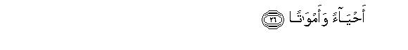
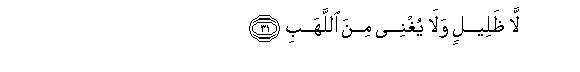
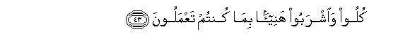
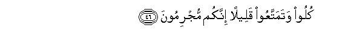
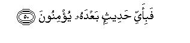

بسم الله الرحمن الرحيم
Sayyid Abul Ala Maududi - Tafhim al-Qur'an - The Meaning of the Qur'an
 77.
Surah Al Mursalat (The Winds Which Are Sent)
77.
Surah Al Mursalat (The Winds Which Are Sent)
The Surah takes its name from the word wal-mursalat in the first verse.
Its subject matter bears full evidence that it was revealed in the earliest period at Makkah. If this Surah is read together with the two Surahs preceding it, namely Al-Qiyamah and Ad-Dahr, and the two Surahs following it, namely An-Naba and An-Naziat, it becomes obvious that all these Surahs are the Revelations of the same period, and they deal with one and the same theme, which has been impressed on the people of Makkah in different ways.
Its theme is to affirm the Resurrection and Hereafter and to warn the people of the consequences which will ultimately follow the denial and the affirmation of these truths.
In the first seven verses, the system of winds has been presented as an evidence of the truth that the Resurrection which is being foretold by the Qur'an and the Prophet Muhammad (upon whom be Allah's peace and blessings) must come to pass. The reasoning is that the power of All-Mighty Allah Who established this wonderful system on the earth, cannot be helpless in bringing about the Resurrection, and the express wisdom which underlies this system bears full evidence that the Hereafter must appear, for no act of an All-Wise Creator can be vain and purposeless, and if there was no Hereafter, it would mean that the whole of one's life was useless and absurd.
The people of Makkah repeatedly asked, "Bring about the Resurrection with which you threaten us; only then shall we believe in it."In vv. 8-l5, their demand has been answered, saying:"Resurrection is no sport or fun so that whenever a jester should ask for it, it should be brought forth immediately. It is indeed the Day of Judgment to settle the account of all mankind and of all its individuals. For it Allah has fixed a specific time it will take place at its own time, and when it takes place with all its dreads and horrors, it will confound those who are demanding it for fun today. Then their cases will be decided only on the evidence of those Messengers whom these deniers of the truth are repudiating with impunity. Then they will themselves realize how they themselves are responsible for their dooms
In vv. 16-28 arguments have been given continuously for the occurrence and necessity of the Resurrection and Hereafter. In these it has been stated that man's own history, his own birth, and the structure of the earth on which he lives, bear the testimony that the coming of Resurrection and the establishment of the Hereafter are possible as well as the demand of Allah Almighty's wisdom. History tells us that the nations which denied the Hereafter ultimately became corrupted and met with destruction. This means that the Hereafter is a truth which if denied and contradicted by a nation by its conduct and attitude, will cause it to meet the same doom, which is met by a blind man who bushes headlong into an approaching train. And it also means that in the kingdom of the universe only physical laws are not at work but a moral law also is working in it, under which in this very world the process of retribution is operating. But since in the present life of the world retribution is not taking place in its complete and perfect form, the moral law of the universe necessarily demands that there should come a time when it should take its full course and all those good works and evil deeds, which could not be rewarded here, or which escaped their due punishment should be fully rewarded and punished. For this it is inevitable that there should be a second life after death. If man only considers how he takes his birth in the world, his intellect, provided it is sound intellect, cannot deny that for the God Who began his creation from an insignificant sperm drop and developed him into a perfect man, it certainly possible to create the same man once again. After death the particles of man's body do not disappear but continue to exist on the same earth on which he lived his whole life. It is from the resources and treasures of this very earth that he is made and nourished and then into the same treasures of the earth he is deposited. The God who caused him to emerge from the treasures of the earth, in the first instance, can also cause him to re-emerge from the same treasures after he has been restored to them at death. If one only considers the powers of Allah, one cannot deny that He can do this; and if one considers the wisdom of Allah, one also cannot deny that it is certainly the very demand of His wisdom to call man to account for the right and wrong use of the powers that He has granted him on the earth; it would rather be against wisdom to let him off without rendering an account.
Then, in vv. 28-40, the fate of the deniers of the Hereafter has been depicted, and in vv. 41-45 of those who affirming faith in it in their worldly life, endeavored to improve their Hereafter, and abstained from the evils of disbelief and thought, morality and deed, conduct and character which might be helpful in man's worldly life, but are certainly ruinous for his life hereafter.
In the end, the deniers of the Hereafter and those who turn away from God-worship, have been warned as if to say: "Enjoy your short-lived worldly pleasure as you may, but your end will ultimately be disastrous." The discourse concludes with the assertion that the one who fails to obtain guidance from Book like the Qur'an, can have no ether source in the world to afford him Guidance.

In the name of Allah, the Compassionate, the Merciful.
[1-7] By the (winds) which are sent in succession, which then blow tempestuously, and lift up (the clouds) and scatter them, then split (them) asunder, then infuse (the hearts) with the remembrance (of God), as an excuse or as a warning.1 That which you are being promised,2 must happen.3

[8-15] Then, when the stars become dim4 and the heaven is rent asunder,5 and the mountains are thrashed into dust, and the time of the Messengers' appointment comes6 (that Day it shall happen). For what day has all this been deferred? For the Day of Decision. And what do you know what the Day of Decision is? Woe on that Day to the deniers (of Truth)!7

[16-19] Did We not destroy the former peoples?8 Then We shall follow them up with those of latter day.9 Thus do We deal with the culprits. Woe on that Day to the deniers (of Truth)!10

[20-24] Did We not create you out of a mean fluid, and kept it lodged in a secure place11 for an appointed term?12 Behold! We had power to do this, as We are excellent Possessors of power!13 Woe on that Day to the deniers (of Truth)!14


[25-28] Have We not made the earth a receptacle, both for the living and for the dead, and set in it high mountains, and given you sweet water to drink?15 Woe on that Day to the deniers (of Truth)!16

[29-34] Go off17 now to the same that you used to deny. Go off to the shadow which has three branches.18 It neither gives coolness nor shelter from the flame of Fire. The Fire shall throw off sparks as huge as castles as though they were yellow camels.19 Woe on that Day to the deniers (of Truth)!
[35-37] That is the Day when they shall neither speak nor be given leave to offer excuses.20 Woe on that Day to the deniers (of Truth!)
[38-40] This is the Day of Decision. We have gathered both you and those who had gone before you together. Now, if you have a trick, use it against Me.21 Woe on that Day to the deniers (of Truth)!



[41-45] The righteous22 are today amidst shades and springs, and whatever fruits they desire (they shall have). "Eat and drink with relish as a reward for the deeds you have been doing." Thus do We recompense the doers of good. Woe on that Day to the deniers (of Truth)!23


[46-50] "Eat24 and enjoy yourselves for a while.25 Indeed, you are culprits." Woe on that Day to the deniers (of Truth)! When it is said to them: "Bow down (before Allah) they do not bow down."26 Woe on that Day to the deniers (of Truth)! Now, what message can there be after this (Qur'an) in which they will believe?27
1That is, sometimes the failure of winds causes the people to be alarmed at the prospect of a famine, and they turn to Allah to repent of their sins: sometimes they bring a lot of rain and the people turn to Allah in gratitude; and sometimes their blowing violently causes dread in the hearts and the people turn to Allah from fear of destruction.
In these verses initially the order of rain-bringing winds has been stated, which is thus: first, winds start blowing in succession; then they assume the proportions of a storm; then they raise the clouds and spread them; then they split and separate them. After this, instead of making mention of the rainfall, it is said that the winds infuse the hearts with the remembrance of Allah, as an excuse or as a warning. That is, it is an occasion when either because of fear man is compelled to remember Allah, or else he confesses his errors and invokes Allah to protect and save him from ruin and bless him with rain. If it has not rained for a long time, and the people are thirsty for rain, even the most hardened disbeliever sometimes begins to remember God when he. sees the winds blowing and the clouds advancing. The drought's being mild and severe makes the difference. In case the drought is mild, the common man who is not far from Allah, will remember Him, but others will offer scientific explanations, saying that there was no cause for anxiety: it did not rain because of such and such a cause and it would be weak-mindedness to start praying to God on such an ordinary thing. However, if the drought is unusually prolonged, and the whole country is faced with a calamitous situation, even the confirmed disbelievers begin to remember God. If they feel shy to use their tongue, in their hearts they feel penitent on their wrongdoing and ingratitude and pray to God to cause rain throughout the country from the winds which are raising the clouds. This is infusion of God's remembrance in the hearts as an excuse. As for its infusion as a warning, it happens when the wind develops into a cyclone and destroys settlement after settlement or it rains so heavily as to cause a deluge, In such a state even a confirmed atheist starts imploring God out of awe for Him, and then all scientific explanations of the cyclone or deluge evaporate from his mind. Thus, after describing the blowing of winds in their succession to say that they infuse the hearts with Allah's remembrance as an excuse or as a warning, is meant to impress the truth that the system working in the world keeps on reminding man that everything on the earth has not been placed under his control but there is a Supreme Power above him, which rules his destiny. That Power is so supreme and mighty that it can use the elements for the sustenance and nourishment of man when it so wills and can use the same elements for his destruction when it so wills.
After this the same system of winds has been proffered as an argument to prove that the Resurrection which is being promised to man, must come to pass. Now, let us see how this system testifies to this truth.
Man generally is perplexed in the case of Resurrection and the Hereafter at two questions. First: is the occurrence of Resurrection possible? Second: what is its need and necessity? And then being perplexed at these questions, he starts entertaining doubts whether it will at all occur or not, or whether it was only a figment of the imagination. In this connection, the Qur'an has at some places reasoned out and proved its possibility, its necessity and occurrence from the system of the universe, and at others adopted another mode of reasoning: oaths have been sworn by some of the countless signs of God's Kingdom and it has been asserted that it shall surely come to pass. This mode of reasoning contains arguments for its possibility as well as arguments for its necessity and arguments for its occurrence.
Here, adopting the same mode of reasoning only the system of the circulation of winds and rainfall has been presented as a sign of the truth that it is a regular system, which has been established by the design of an All-Wise, All-Mighty Sovereign; it is not a chance occurrence, as a result of which a system might have been generated in the atmosphere of the earth that vapors should arise from the seas, winds should carry them and gather them into clouds, then split and separate them into pieces and transport them to different parts of the earth and then should cause them to fall as rain. This system has not been devised accidentally by some blind and deaf Nature, but it is a well-considered and well-designed plan, which is functioning regularly according to a law. That is why it never so happens that the heat of the sun should produce ice on the surface of the sea instead of vapors, but the sun always raises only vapors from the sea. It never so happens that the monsoons should blow in the reverse order and suppress vapors into the sea but they always raise them up into the atmosphere. It never so happens that the formation of clouds should cease, or the winds should stop to carry them to dry lands or the falling of rain on the earth should discontinue. The same law has been at work since millions and millions of years under which this system is functioning. Had it not been so our coming into existence on the earth and survival here would not be possible.
In this system one fords a clear purpose and the working of regular law. One can clearly see that on the earth the life of man, animal and vegetation deeply relates to the winds and rainfall, and this arrangement testifies that water has been provided to bring animate life into existence and keep it alive precisely according to their requirements and a law. This purpose and regularity is not found only in this aspect but in the entire system of the universe, and man's whole scientific progress is based on it. About every thing man tries to find out what is its purpose and on what principle it works Then as he goes on gaining insight into the purposes of the creation of different things and the principles on which they work, he goes on devising new and ever new methods of their use and making new inventions for the progress of his civilization. Had there been no such concept in the mind of man naturally that the world is a meaningful world and everything in it is working on a principle, he would never have entertained the question about anything as to what was its purpose and how it could be put to use.
Now, when this world and everything in it has meaning, and if there is a law working in this world and in everything it contains, and if it has been functioning with the same purpose and regularity since millions and millions of years, then a stubborn person only could refuse to accept that an all-knowing, All-Mighty God has made it, and about that God it would be foolish to assume that although He could make and cause it to function but cannot break it, and after breaking it, cannot reconstruct it in any other form if He so wills, The concept about matter that it is imperishable was the chief support of the ignorant atheist of the past, but the progress of knowledge has proved it also false. Now it is an acknowledged scientific fact that matter can change into energy and energy into matter. Therefore, it is perfectly according to knowledge and reason that this material world will last only as long as the Living and Eternal God sustains it. As soon as He wills to change it into energy, He can change it by a simple Command and His one Command is enough to re-create it into any other material form and shape He wills.
This much then about the possibility of the Resurrection, which cannot now be rejected by any scientific and rational argument. As for the question that it must take place so that man is rewarded for his good works and punished for his evil deeds, the person who acknowledges man's moral responsibility and also believes that rewarding the good services and punishing the crimes is the necessary demand of this moral responsibility, cannot but admit that there must be the Hereafter. There is no law or government in the world, which can punish every crime and reward every good act. To say that the prick of the conscience is a sufficient punishment for the culprit and the satisfaction of the conscience is sufficient reward for the doer of good is no more than meaningless philosophizing. The question is: How and when did the conscience of the person who killed an innocent man and then himself died in an accident immediately after it reprove him? And when did the conscience of the man who went to fight for the sake of truth and justice and fell a victim to a bomb blast suddenly, have the satisfaction that he had laid down his life for a good cause? Thus, the truth is that the pretenses invented to avoid the belief in the Hereafter are all meaningless. Man's intellect wants, his nature requires, that there should be justice, but in the present life of the world it is not possible to have full and perfect justice. Justice can be had only in the Hereafter and only under the judgment and command of the All-Knowing, Omnipotent God. Denial of the necessity of the Hereafter is, in fact, denial of the necessity of justice.
Intellect can go only so far as to convince man that the Hereafter is possible and it should come about. As for the truth that it will surely come about, the "knowledge" of it can be obtained only through Revelation, and Revelation has given us the news that "that which you are being promised must happen". We cannot attain this knowledge by intellectual reasoning; however, we can attain the certainty of its being true on the basis that the thing of which we are being informed by Revelation is both possible and necessary.
2Another meaning can be; "That which you are being threatened with," i. e. the Resurrection and Hereafter.
3Here an oath has been sworn by five things on the inevitability of the Resurrection:
(1) "Those which are sent forth in succession, or for a good cause;"
(2) "those which blow violently and tempestuously
(3) "those which disperse and scatter;"
(4) "those which split and separate;" and
(5) "those which inspire the remembrance." As these words only describe the characteristics and it has not been specified what thing or things they qualify, this has given rise to a difference of opinion among the commentators as to whether these are the qualities of one particular thing or of different things and what the thing or things are. One group of them says that all the five qualify the winds; the second group says that all the five imply the angels; the third group says that the first three imply the winds and the remaining two the angels; the fourth says that the first two imply the winds and the other three the angels; another group has opined that the first quality implies the angels of mercy, the second the angels of punishment and the remaining three imply the verses of the Qur'an.
In our opinion, the first thing worthy of consideration is that when five characteristic have been mentioned continuously in one and the same context and there is no indication to show as to what has been qualified up to a certain point and where from has the qualification of another thing begun, it cannot be correct, on the basis of a baseless conjecture, to understand that in these verses oaths have been sworn by two or three different things. Rather in this case the continuity of the subject by itself requires that the whole passage be regarded as related to the characteristics of one and the same thing. Secondly, wherever in the Qur'an an oath bas been sworn by a certain thing or, things in order to convince the doubters or deniers of an unseen truth, there the oath stands for an argument or reasoning which is meant to tell that the thing or things point to the truth's being right and correct. For this purpose obviously it cannot be correct to present one imperceptible thing as an argument for another imperceptible thing; for, only a perceptible thing can be presented as an argument for an imperceptible thing. Hence in our opinion the correct explanation is that it implies the winds and the explanation of the people who interpret the five things to mean the angels cannot; be acceptable, for the angels are as imperceptible as is the occurrence of the Resurrection.
Now, let us consider as to how these different states of winds point to the occurrence of the Resurrection. One of the most important factor which has made animal and vegetable life possible on the earth is the air. The relationship its qualities bear with every kind of life testify that there is an all-powerful, All-Wise Creator, Who willed to create life on this earth and for this purpose created here a thing whose qualities exactly and precisely correspond to the requirements of the existence of living beings. Then, He did not only wrap up the earth in the air and left it alone, but by His power and wisdom characterized this air with countless different states, which are being regulated since millions and millions of years in such a way that they cause the change of seasons and weather sometimes it is close and sometimes a soft breeze blows sometimes it is hot and sometimes cold; sometimes it brings clouds and sometimes it drives away clouds; sometimes it causes pleasant gusts to blow and sometimes disastrous windstorms; sometimes it brings beneficial rains and sometimes there is drought; in short, there are different 'kinds of winds which blow in their own time, and every kind serves one or the other purpose. This arrangement is the proof of a dominant Power, for which neither it can be impossible to bring life into existence, nor to obliterate it, nor to re-create it after having annihilated it. Likewise, this arrangement is also a proof of a supreme wisdom about which only a foolish man could think that all this was being done for fun, without any higher object in view. As against this wonderful system man is so helpless that he can neither cause a favorable wind to blow for himself, nor can prevent a disastrous cyclone from blowing on himself. However shameless, obstinate and stubborn he may be, the wind does at one time or another remind him that a Mighty Sovereign is ruling over him, Who can turn this principal means of his life into a cause of blessing for him or into a cause of ruin for him whenever He so likes, and man does not have the power to prevent or avert any of His decisions. (For further explanation, see E.N. 7 of Al-Jathiyah, E.N.'s 1 to 4 of Adh-Dhariyat).
4That is, when they lose their light and lustre.
5"When the heaven is rent asunder": when the system and discipline of the heavens under which every star and planet is established and moving in its orbit and everything in the universe is adhering to the bounds set for it, is broken.
6At several places in the Qur'an it has been stated that when the case of mankind will be presented before Allah on the Day of Resurrection, the Messenger of every nation will be called upon to testify that he had conveyed Allah's Messages intact to his people. This will be Allah's first and major argument against the culprits and the wicked people to prove that they were themselves responsible for their wrong attitude and conduct in life, for there had been no negligence on the part of Allah to show guidance and administer warnings . For instance, see AI-A`raf: 172, 173 and E.N.'s 134, 135, Az-Zumar: 69 and E.N. 80, Al-Mulk:8 and E.N. 14.
7"Deniers of Truth": those people who took the news of the coming of Resurrection as a lie, and spent their lives in the world under the delusion that the time would never come when they would have to present themselves before their God and render an account of their deeds.
8This is an argument from history for the Hereafter, It means; "Consider your own history in the world. Whichever nations denied the Hereafter and took this worldly life to be real life and based their moral attitude on the results appearing here regarding them as the criterion of good and evil, ultimately went to their doom without exception This is a proof of the fact that the Hereafter is an actual reality overlooking and ignoring which causes the same kind of harm to a person which is caused when he chooses to close his eyes to the hard facts of life. (For further explanation, see E.N. 12 of Yunus, E.N. 86 of An-Naml, E.N. 8 of Ar-Rum, E.N. 25 of Saba).
9That is, "This is a permanent law with Us. Just as denial of the Hereafter has proved disastrous for the nations of the past so it will always prove disastrous also for the nations of the future. No nation has been an exception to it before nor will any be so in the future."
10This sentence in the present context means: "The fate they have met or will meet in the world, is not their real punishment; their real doom will descend on them on the Day of Decision. The punishment here is only in the nature of a person's being arrested when he commits one crime after the other fearlessly and is not inclined to mend and change his ways. The court where his test is to be decided and he is to be punished for all his misdeeds, will not be established in this world but in the Hereafter, and that indeed will be the actual Day of his ruin and disaster." (For further explanation, see E.N.'s 5, 6 of Al-A`raf, E.N.,105 of H ud).
11"A secure place": the mother's womb in which the child is so firmly lodged as soon as it has been conceived and where such arrangements are made for its security and nourishment that abortion cannot take place unless there is a disaster, and even for artificial abortion extraordinary devices have to be adopted, which are both risky and harmful in spite of modern developments in medical science.
12The words qadar im-malum do not only mean that the term is appointed and fixed but they also contain the sense that it is known to Allah alone. About no child can man know by any means how many months, days, hours, minutes and seconds it will remain in the mothers womb and what will be its exact and precise time of birth. Allah alone has fixed a specific term for every child and He alone knows it.
13This is an express argument for the possibility of the life-after-death What is meant to be said is: "When We had the power to shape and develop you into a perfect and complete man from insignificant sperm-drop, how shall We be helpless to re-create you in some other way ? Our this creation in consequence of which you exist as a living being, is a proof that We are excellent Possessors of power; We cannot be so helpless as to be unable to re-create you after having created you in the first instance.
14This sentence here gives the meaning that in spite of the express argument for the possibility of life-after-death, the people who are denying it, may mock it as they may and look down upon its believers as people of antiquated ideas and whims, but when the Day comes which they are denying today, they will themselves know that it is a Day of their own ruin and disaster.
15This is yet another argument for the possibility and reasonableness of the Hereafter. It is this very earth which since millions and millions of years has been sustaining and providing for countless different kinds of creatures. Every kind of vegetation and every kind of animal and man are living on it, To meet the requirements of all immeasurable treasures of provisions of different kinds are corning out of its belly. Then it is on this very earth that countless members of all kinds of creatures die every day, but there exists a wonderful arrangement in that the dead bodies of all creatures are deposited in the same earth, and it again becomes ready for sustaining life and providing home to the new members of every species. This earth has not been shaped like a smooth-surfaced ball either, but here and there on it there have been set high mountains and mountain-ranges, which play an important role in causing the change of seasons and rainfall, the birth of rivers creation of fertile valleys, growth of trees which supply timber, and provisions of a variety of minerals and stones. Then in the interior of this very earth, sweet water has been stored and on its surface rivers of sweet water have been arranged and from the saline waters of the sea also vapors of pure water are raised and caused to fall as rain from the sky. Is not all this an argument to prove that an All-Powerful Sovereign has created all this and He is not only All-Powerful but AII-Knowing and All-Wise as well'? Now, if this earth has been thus equipped and provisioned only by His power and wisdom, why should an intelligent man trod it difficult to understand that the same Sovereign by His power can wind up this world and create another world on a new pattern, and the demand of His wisdom is that he should create another world after it so that He may call man to account for the deeds he has done in this world?
16Here, this sentence signifies that the people who deny the coming of the Hereafter and regard it as impossible and irrational in spite of seeing these manifest signs of Allah's power and wisdom, may remain lost in their vain imaginations if they so like. But the Day when all this takes place against their expectations, they will realize that they have earned ruin on account of their own folly.
17After giving proofs of the coming of the Hereafter, now it is being stated how the deniers will be dealt with when it has actually taken place.
18"Shadow": shadow of smoke; "three branches": because when a big smoke arises it is divided into several parts at the top.
19That is, each spark will be like a castle, and when these huge sparks will rise and burst and fly about in all directions it will seem as though they were yellow camels running and jumping about ceaselessly.
20This will be their ultimate state at the time they will be entering Hell. Before this in the plain of Resurrection they will be offering all sorts of excuses, blaming others for their errors and proving their own selves to be innocent, abusing their leaders and guides who led them astray; so much so that some of them will even disown their crimes shamelessly, as has been stated at several places in the Qur'an. But when their being criminals will have been established by every kind of evidence, and when their own hands and feet and limbs will have borne witness against them to prove their guilt fully, and when after fulfilling all requirements of justice rightly and truly, the sentence will be passed on them, they will be dumbfounded and no room will be left for them to offer any excuse. To refuse an opportunity or permission to offer an excuse, does not mean that judgment will be passed against them without giving them a chance for self-defense, but it means that their guilt and crime will be proved to the hilt and they will not be able to offer any excuse after it.
21That is, "In the world you used every kind of deception and trick in self-interest. Now, if you have any trick to escape My punishment, you may use it to defeat Me and My plan."
22As this world has been used here in contrast to the "deniers'; the righteous here implies the people who refrained from denying the Hereafter and accepted it and passed their life in the world with the belief that in 'the Hereafter they would have to render an account of their word and deed and their conduct and character.
23Here this sentence means that one of their afflictions. as mentioned above, will be that they will be standing as culprits in the plain of Resurrection, their crimes will have been proved and established openly and they will not be in a position even to open their mouths to put forward a plea in self defense, and shall ultimately become fuel of Hell. Their other affliction, and by far the worse will be that they will see the same believers enjoying themselves in Paradise, whom they had been opposing and resisting and mocking throughout their lives as foolish, narrow-minded, mean and old fashioned people.
24In conclusion, these words are being addressed not only to the disbelievers of Makkah but to all disbelievers of the world.
25"For a while": in their brief life of the world.
26"Bowing before Allah": does not only imply worshiping Him but also means believing in the Messenger sent by Allah and in the Book revealed by Him and following and obeying His Commands.
27That is, the greatest Message that could distinguish the Truth from falsehood for man and show him right guidance, has been sent down in the shape of the Qur'an. if a person does not believe even after reading it or hearing it read, what else after this can show him the correct guidance?